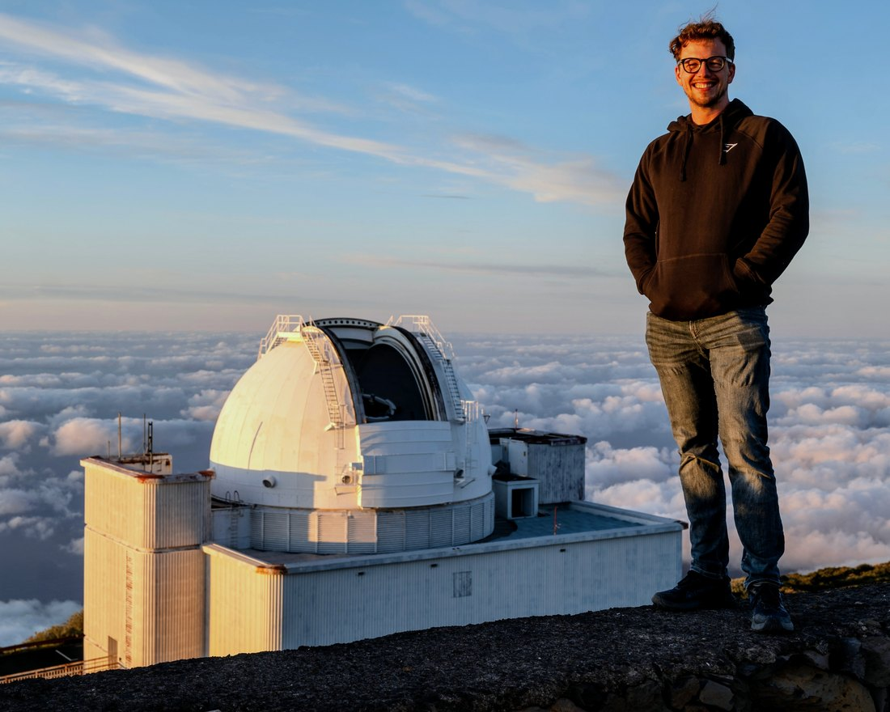

Stellar astrophysics
Hot subluminous stars in the era of Gaia
About me
I am a doctoral researcher in the stellar astrophysics group at the University of Potsdam, Germany. I work on hot subluminous stars, the stripped remnants of red giants that have lost almost all of their hydrogen envelopes. These exposed stellar cores preserve the signatures of the binary interactions that formed them, which makes them ideal tracers of how stars exchange mass, from stable mass transfer to common-envelope ejection and stellar mergers.
For my doctorate, I assembled the first volume-limited sample of these stars out to 500 pc, observing every unclassified candidate across more than 100 nights at ten telescopes. A complete sample reveals not only which stars exist, but which are missing. By accounting for the full population, we can constrain rare formation pathways rather than mistake their apparent scarcity for selection bias. Some of the closest hot subdwarf binaries are also candidate type Ia supernova progenitors and verification sources for LISA.
Education
I studied physics and mechanical engineering at the University of Western Australia, then completed a master's degree and a doctorate in astrophysics at the University of Potsdam.
Research interests
My research interests include hot subdwarfs, binary star evolution, volume-limited surveys, type Ia supernova progenitors, Galactic archaeology, spectroscopy and above all, observing.
- Publications
- 25
- Peer reviewed
- 20
- Citations
- 193
- h index
- 7

Credit: Harry Dawson